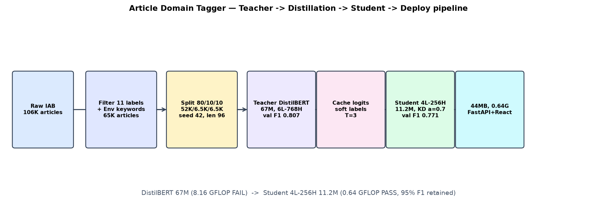
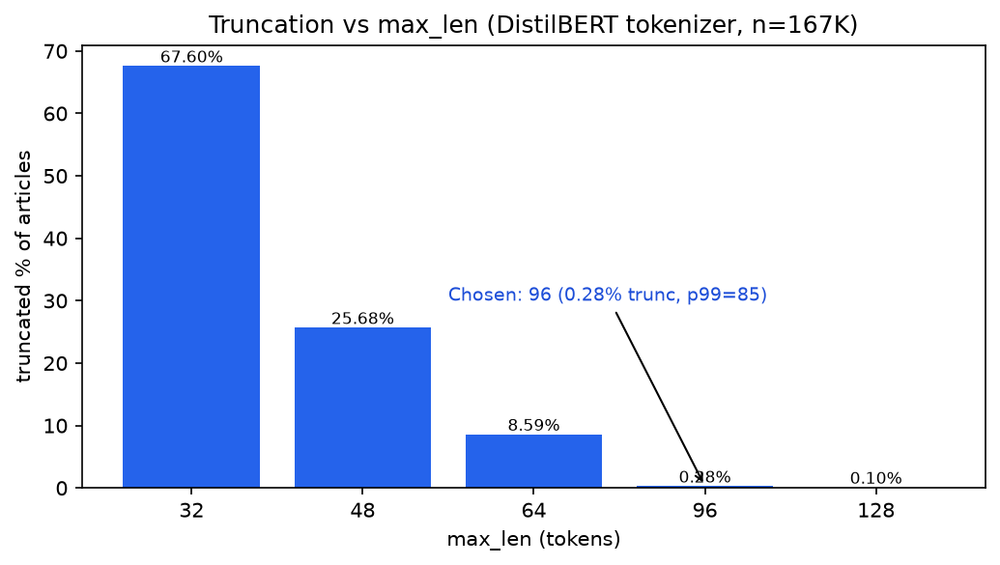
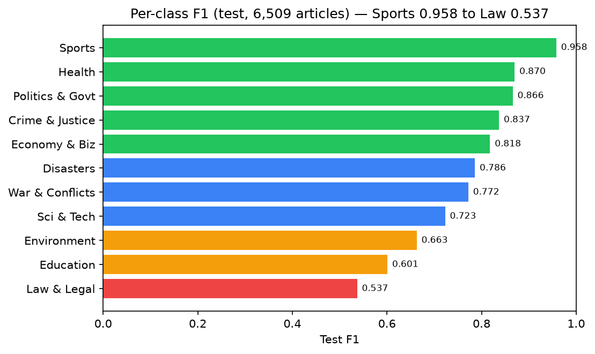
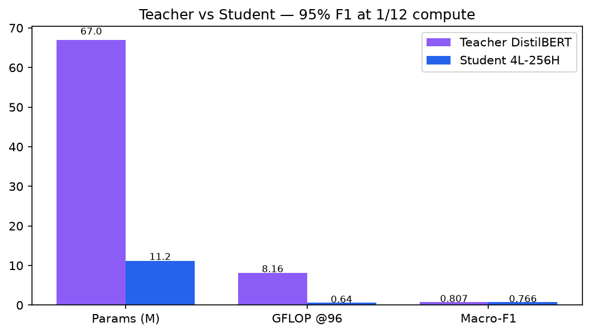
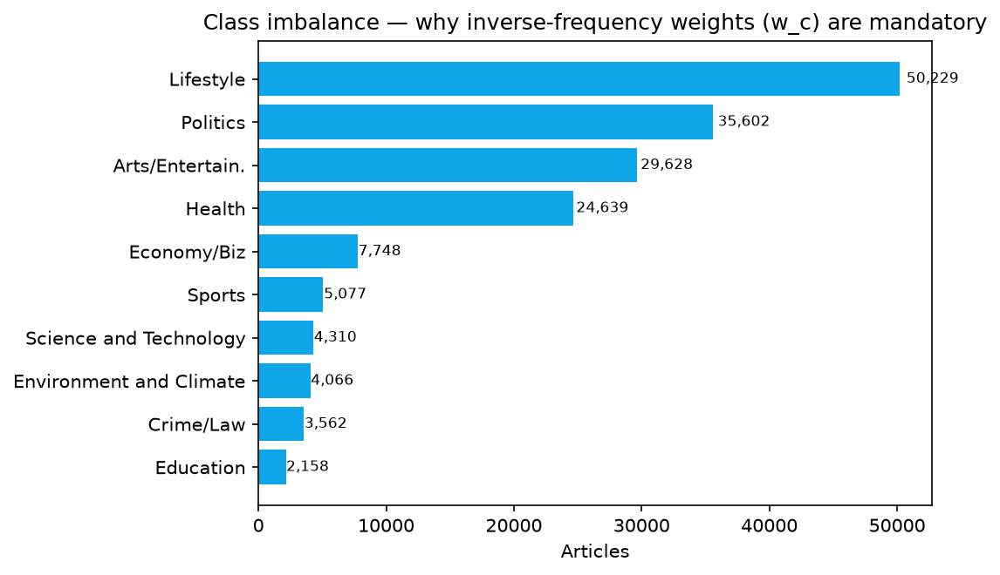

Video Presentation
Complete walkthrough: dataset, architecture, knowledge-distillation logic, results and live demo.
Chapters: 0:00 Intro & team • 0:30 Problem & IAB dataset • 1:30 Taxonomy & splits •
2:30 Architecture • 3:30 KD loss walkthrough • 4:30 Results & graphs • 5:30 Live demo • 6:30 Limitations & links.
Direct link (after upload): https://youtu.be/YOUR_VIDEO_ID
VIDEO_SCRIPT.md in the repo.
System Architecture
Teacher (DistilBERT 67M) → cached soft labels → Student (4L-256H, 11.2M) → FastAPI + React.

Mermaid source for this diagram is in tools/architecture.mmd — re-export from mermaid.live if you restyle it.
Data Preparation
106K IAB articles (mdonigian/iab-news-classification) → filter to 11 labels + keyword-extract Environment from Science → 65,083 articles → stratified 80/10/10 split, seed 42 (52,065 / 6,509 / 6,509). See data/taxonomy.py.
Teacher Training
Fine-tune distilbert-base-uncased + 11-label head, 3 epochs, LR 2e-5, batch 32, inverse-frequency weights. Best val macro-F1 0.807. See train/teacher_train.py.
Knowledge Distillation
Cache teacher logits (train/cache_teacher_logits.py), train Student 4L-256H with KL (T=3, α=0.7) + weighted CE, 5 epochs, seeds 42 & 1337 → mean val F1 0.771. See train/train_student.py:38-43.
Deployment
Export 44 MB model (deploy/model_export.py, generated/deployed_student/) → FastAPI app.py (/predict, /fetch-url) ↔ React frontend (frontend/src/App.jsx). CPU p50 ~5.8 ms.
Mathematical Foundation
The three equations that govern the project — loss, imbalance handling, compute budget.
1. Knowledge-Distillation Loss train/train_student.py:38–43
Used: α = 0.7, T = 3.0, LR 5e-4, 5 epochs. T² rescales gradients so soft and hard terms stay balanced. Soft targets carry inter-class similarity (e.g. Crime vs Law); hard CE anchors ground truth.
def kd_loss(student_logits, teacher_logits, labels, weights, T=3.0, alpha=0.7, device="cpu"):
ce = F.cross_entropy(student_logits, labels, weight=weights.to(device))
s = torch.log_softmax(student_logits / T, dim=-1)
t = torch.softmax(teacher_logits / T, dim=-1)
kl = (t * (torch.log(t + 1e-9) - s)).sum(-1).mean()
return alpha * (T * T) * kl + (1.0 - alpha) * ce, ce.item(), kl.item()2. Inverse-Frequency Class Weights train/common.py:40–46
N = total samples, K = 11, Nc = class-c count. Education (~1.3%) is ~25× smaller than Politics (~26%) — without this the model ignores rare classes.
counts = labels.value_counts().sort_index()
w = np.array([n / (k * counts.get(i, 1)) for i in range(k)], dtype=np.float32)3. FLOP Budget Gate config.py:51, analysis/measure_flops.py
Student 4L-256H @ seq 96 ≈ 0.64 GFLOP → PASS. Teacher DistilBERT @ 96 ≈ 8.16 GFLOP → FAIL (12× over). Operating point 96 chosen because p99 = 85 tokens: only 0.28% truncated.
Graphs & Evidence
Token-Length Truncation

p50=39, p99=85. max_len=96 truncates 0.28% — from generated/token_stats.csv.
Per-Class F1

Sports 0.958 → Law & Legal 0.537. Weak = smallest test sets.
Teacher vs Student

95% of teacher F1 at 1/12th the compute, 1/6th the size.
Class Imbalance

Why w_c weighting is mandatory — from generated/class_counts_revised.csv.
Test-Set Results (6,509 articles)
Per-Class Performance
| Domain | F1 | Strength | Note |
|---|---|---|---|
| Sports | 0.958 | Excellent | Distinctive vocabulary |
| Health | 0.870 | Very Good | |
| Politics & Government | 0.866 | Very Good | Largest class |
| Crime & Justice | 0.837 | Good | |
| Economy & Business | 0.818 | Good | |
| Disasters & Emergencies | 0.786 | Good | |
| War & Conflicts | 0.772 | Decent | Confused with Politics |
| Science & Technology | 0.723 | Moderate | Overlaps Environment |
| Environment & Climate | 0.663 | Moderate | Keyword-extracted |
| Education | 0.601 | Weak | 155 test rows (smallest) |
| Law & Legal | 0.537 | Weakest | 221 test rows; vs Crime |
REPORT.md.
Live Demo & Code
Frontend is being deployed — link will appear here. Meanwhile use the video demo and run locally.
Run the web interface
# Terminal 1: API (port 8000)
venv\Scripts\python.exe -m uvicorn app:app --reload --port 8000
# Terminal 2: UI (port 5173)
cd frontend
npm install
npm run dev
# open http://localhost:5173Core logic — student train/student.py
return BertConfig(
vocab_size=30522, hidden_size=256,
num_hidden_layers=4, num_attention_heads=4,
intermediate_size=1024, num_labels=11)Core logic — inference app.py: run_prediction
inputs = tokenizer(text, return_tensors="pt",
truncation=True, max_length=96, padding=True)
probs = torch.softmax(model(**inputs).logits, dim=-1)[0]API: POST /predict (text → top-3 labels) • POST /fetch-url (URL → extract + classify) • GET /health. Dataset: mdonigian/iab-news-classification.
Project Team
Student
- Garima Devi
- github.com/garimadevi
- Internship Project 2026
Mentors
- Assigned Mentor
- Mohd. Amaan Sir (Amaan Irfan Sir)
Faculty Advisors
- Prof. Prithwijit Guha — Faculty Advisor
- Ashwin Jacob Gigo — Co-Advisor